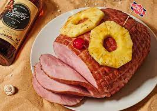

Rum Ham

Enjoy a day at the beach with this family favorite. Bring it along with you into the briny
depths as you set out for the adventure of a lifetime on your tube. It'll surely attract sharks,
but it will also incapacitate them too, so be sure to bring your phone to take wild shark pics for the gram.
This ham, aged overnight in rum of your choosing will absorb tons of it, so you can be certain you'll
remain full and also buzzed.
Ingredients
- Ham (pre-cooked)
- 1.75L of your choice of rum
- Large freezer bag
- Slice of pineapple
Steps
- Pour all of your rum into the freezer bag.
- Place ham into the freezer bag of rum.
- Let sit in refridgerator for 24 hours.
- Remove ham from freezer bag when ready to eat.
- Garnish ham with pineapple slice.
- Enjoy your rum-flavored ham and your ham-flavored rum.